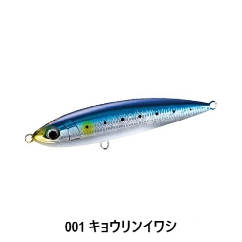
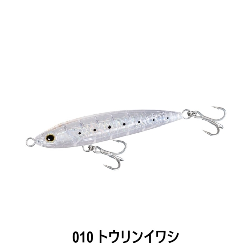
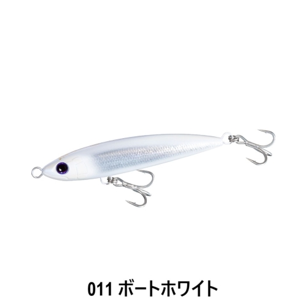
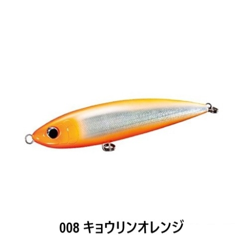
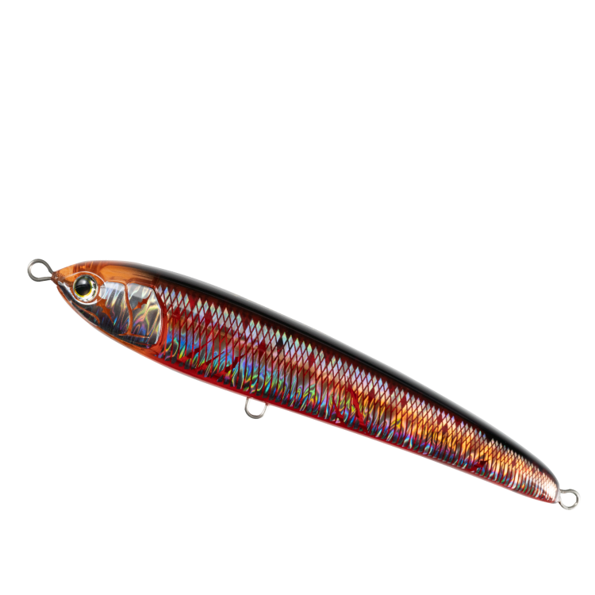
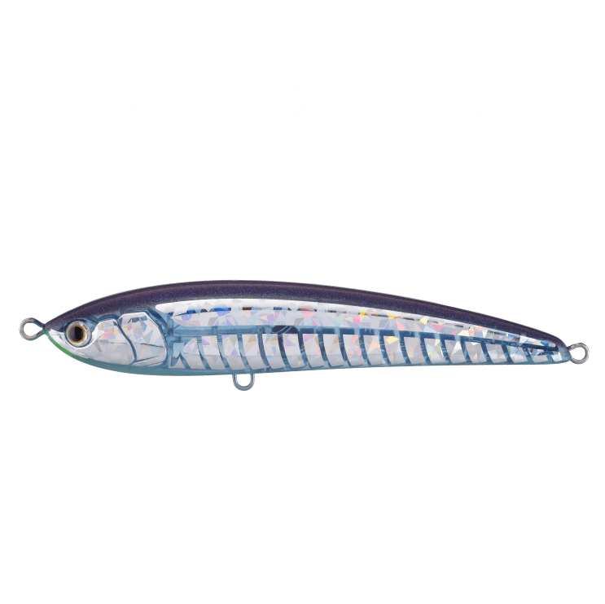
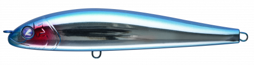

オシアペンシル 別注平政
更新日：2026年11月3日
オシアペンシル 別注平政はSHIMANO（シマノ）のダイビングペンシルです。
大型ヒラマサを狙って作られたS字ダイブ系の専用モデルで、コンセプトは「飛び」と「入り」の良さ。ホースヘッドなど足場の高い場所でも、簡単な操作で安定してダイブするのが最大の魅力です。

画像出典:アングラーズショップ豪海
スペック
- メーカー
- SHIMANO（シマノ）
- タイプ
- ダイビングペンシル（フローティング）
- 全長／自重
- 145mm／46g・160mm／57g・190mm／70g・220mm／114g
- ターゲット
- ヒラマサ・ブリ・マグロ
- 価格（本体）
- 145F 2,550円／160F 2,640円／190F 3,250円
▼今すぐチェック

別注平政の特徴
「飛び」と「入り」にこだわった、S字ダイブ系の大型ヒラマサ狙いモデル
-
S字ダイブ系アクション
飛びと泳ぎを両立させたオシアペンシルシリーズに、S字ダイブ系アクション専用モデルとして登場。ヒラマサを始めブリなどの青物、マグロ系のターゲットを狙える。
-
足場の高い所でも安定して入る
ホースヘッドなど足場の高い場所からでも安定してダイブする、簡単操作の設計。難しいロッドワークがなくても扱いやすい。
-
ベイトに合わせて選べる4サイズ
145Fから220Fまでの4サイズ展開。ヒラマサはもちろん、ブリやマグロのキャスティングにも対応し、ベイトの大きさに合わせて選べる。
別注平政の使い方
キャスト後にロッドをあおってルアーを水中に引き込み、ダイブのあとにしっかり浮かせる間を作るのが基本です。
まずはリーリングとあおりのリズムを一定にして、S字の動きを出しましょう。反応がない時は、ポーズの長さとダイブの深さを変えて誘いを変えていきます。
別注平政の得意な状況
ボートからの大型ヒラマサ狙いが一番の出番で、ブリやマグロのキャスティングにも使えます。
ベイトのサイズに合わせて、145F〜220Fを選びましょう。
足場の高い場所でも安定して動くので、大型ヒラマサが釣れるチャンスを作りやすい1本です。
ワンポイント
フックとリングは魚のサイズとタックルに合わせましょう。重さやバランスが変わるとダイブの入り方も変わるので、下の表のサイズを目安にすると安心です。
スケールブースト搭載の「キョウリン」カラーは、鱗のような複雑な反射で水中のフラッシングを強めたい時に向いています。
別注平政のサイズの使い分け
| サイズ | 全長／自重 | フック・リングの目安 |
|---|---|---|
| 145F | 145mm／46g | ST-46 #2/0 |
| 160F | 160mm／57g | ST-66 #2/0（100lbリング） |
| 190F | 190mm／70g | ST-66 #3/0（150lbリング） |
| 220F | 220mm／114g | ST-66 #4/0（200lbリング） |
別に、220Fより6g重い「別注平政220F フラッシュブースト」（120g）もあります。サイズはベイトの大きさと、投げ続けられる重さで選びましょう。
人気カラー
人気カラーを紹介します（サイズによって取り扱う色が異なります）。

キョウリンイワシ青背のイワシカラー。スケールブーストのフラッシングでベイトに合わせやすい。

トウリンイワシ透け感のあるイワシカラー。ナチュラルに見せたい時に。

ボートホワイト白系のカラー。見やすさを重視したい時に。

キョウリンオレンジオレンジ系のアピールカラー。濁りや朝夕のローライトに。
画像出典:アングラーズショップ豪海
▼今すぐチェック
別注平政に似ているルアー
-

ラピード F190 マリア 詳細はこちら＞全長190mmのフローティングペンシル。ヒラマサ・ブリ・マグロを狙う点が同じで、同サイズの比較候補になる。
-

レガート F190 マリア 詳細はこちら＞全長190mmのフローティングペンシル。ヒラマサ・ブリ・マグロのローテーションに加えやすい。
-

フォースガイル160F ブルーブルー 詳細はこちら＞全長160mm・自重50gのS字系ペンシルベイト。S字の動きで誘う点が近く、シーバスや青物に使える。